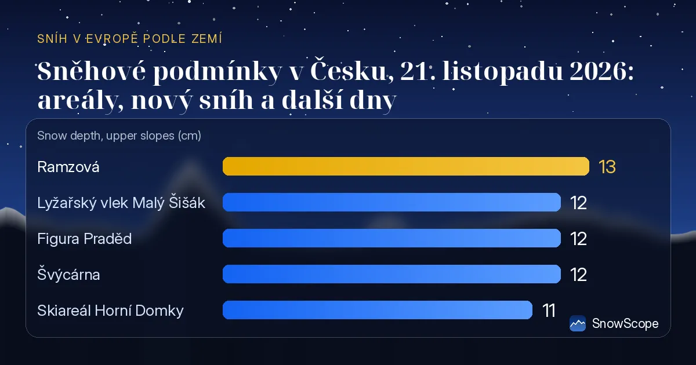
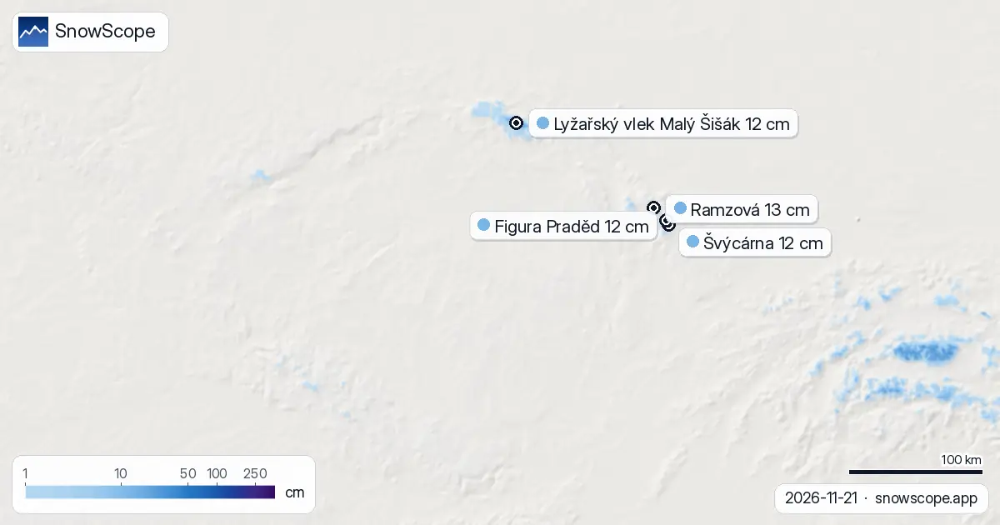

Sněhové podmínky v Česku, 21. listopadu 2026: areály, nový sníh a další dny
Sněhová pokrývka v Česku zabírá asi 620 km² (sobota, 21. listopadu). To je o 180 km² více než včera. To je 2 % horského území v Česku, které sledujeme.
Podívejte se na předpověď sněhu pro Ramzová v aplikaci SnowScopeVýška sněhu, upozornění a 3D mapa, zdarma.
Sněhová pokrývka dnes
Sněhová hranice leží kolem 1 200 m. Před sedmi dny měřila plocha 1 780 km², o 1 160 km² více než teď.
| Day | White area | Most new snow in 3 days | Deepest resort |
|---|---|---|---|
| pondělí, 16. listopadu | 720 km² | 0 cm | Bílá |
| úterý, 17. listopadu | 230 km² | 2 cm | Ramzová |
| středa, 18. listopadu | 60 km² | 2 cm | Figura Praděd |
| čtvrtek, 19. listopadu | 50 km² | 1 cm | Lyžařský vlek Malý Šišák |
| pátek, 20. listopadu | 660 km² | 2 cm | Skiareál Horní Domky |
| sobota, 21. listopadu | 620 km² | 3 cm | Ramzová |

Kde napadl nový sníh
Třídenní úhrny dosahují 3 cm. Nejvíc: Krkonoše, Jeseníky a Šumava.
Co to znamená na sjezdovkách
Obleva ukusuje pokrývku: ráno tvrdý sníh, odpoledne mokrý.
Výška sněhu podle nadmořské výšky
Průměrná výška sněhové pokrývky podle výšky: 500–1 000 m: průměrně pod 1 cm (1 % pod sněhem); 1 000–1 500 m: průměrně 1 cm (41 % pod sněhem).
Nejlepší areály teď
Vede Ramzová: 13 cm v horní části sjezdovek.
Areály se sněhem na horních tratích: 36 z 171.
Dále: Lyžařský vlek Malý Šišák (12 cm), Figura Praděd (12 cm), Švýcárna (12 cm) a Skiareál Horní Domky (11 cm).
Ramzová: 7 cm nového sněhu za tři dny a do data úterý, 24. listopadu ještě až 4 cm.
Další dny
Během příštích tří dnů se čeká až 7 cm, za celý týden až 10 cm.
Nejsněživější den: pondělí, 23. listopadu, až 5 cm.
Tipy pro lyžaře
- Před cestou si ověřte, zda vleky jezdí.
About these numbers
Resort snow depths are the deepest snow on the resort's upper slopes from the SnowScope snow model (about 1 km, run of 21. listopadu); they are estimates for an area, not a measurement at one point. Station values are measurements on the date shown. Forecasts can change. Always read the official avalanche bulletin before going off-piste.
Cite this report
For research, teaching or the press: the numbers and charts are free to reuse under CC BY 4.0 with this citation.
SnowScope (2026), Sněhové podmínky v Česku, 21. listopadu 2026: areály, nový sníh a další dny, https://snowscope.app/blog/cs/2026/11/czechia-snow-cover-loss-this-week-21-november-2026.html, accessed 2026-11-21
SnowScope (Atlas Labs). (2026, November 21). Sněhové podmínky v Česku, 21. listopadu 2026: areály, nový sníh a další dny. SnowScope snow reports. https://snowscope.app/blog/cs/2026/11/czechia-snow-cover-loss-this-week-21-november-2026.html
BibTeX
@misc{snowscope2026czechiasnowcoverlossthis,
author = {{SnowScope (Atlas Labs)}},
title = {Sněhové podmínky v Česku, 21. listopadu 2026: areály, nový sníh a další dny},
year = {2026},
month = nov,
howpublished = {\url{https://snowscope.app/blog/cs/2026/11/czechia-snow-cover-loss-this-week-21-november-2026.html}},
note = {Published 2026-11-22 10:03 UTC; accessed 2026-11-21}
}· CC BY 4.0 · Methods, data and tools →
Ramzová: snow and temperature by height, this winter vs last (tools) →
Follow Ramzová
Zdarma: zpráva, když přichází nový sníh, a předpověď každé ráno.